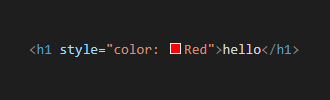
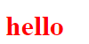
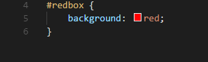

info
CSS Specificity คืออะไร?
ถ้าหากมีข้อขัดแย้งสองหรือมากกว่านี้กฎ CSS ที่ชี้ไปที่องค์ประกอบเดียวกัน เบราว์เซอร์ปฏิบัติตามกฎบางข้อเพื่อพิจารณาว่าอันไหนที่เฉพาะเจาะจงที่สุดและนำมาแสดงผลบนหน้าเว็บ
คิดว่าความเฉพาะเจาะจงเป็นคะแนนที่กำหนดลักษณะของการแสดงในที่สุดจะนำไปใช้กับองค์ประกอบ
The universal selector (*) มีความจำเพาะต่ำในขณะที่ตัวเลือก ID มีความเฉพาะเจาะจงสูง
info
Specificity Hierarchy ระดับชั้น
ตัวเลือกทุกตัวมีระดับชั้นเฉพาะ มีสี่ประเภทที่กำหนดระดับความเฉพาะเจาะจงของตัวเลือกได้แก่
- Inline styles รูปแบบ inline ถูกแนบมาโดยตรงกับองค์ประกอบที่จะมีสไตล์ ตัวอย่างเช่น


จะแสดงคำว่า hello ที่มีสีแดงขนาด h1 ออกมา
- IDs เป็นตัวระบุเฉพาะสำหรับองค์ประกอบของหน้า เช่น #redbox

- Classes, attributes and pseudo-classes หมวดหมู่นี้รวมถึง class, [attributes]และ pseudo-classes เช่น :hover, :focus
- Elements and pseudo-elements หมวดหมู่นี้รวมถึง element names และ pseudo-elementsเช่น h1, div,: before และ: after
info
วิธีคำนวน Specificity
เริ่มต้นด้วย 0
เพิ่ม 1000 สำหรับ style attribute
เพิ่ม 100 สำหรับ id
เพิ่ม 10 สำหรับแค่ละ attribute, class หรือ pseudo-class
และเพิ่ม 1 สำหรับแค่ละ element name or pseudo-element
ค่า Specificity ใดมีค่ามากที่สุดจะถูกนำมาใช้